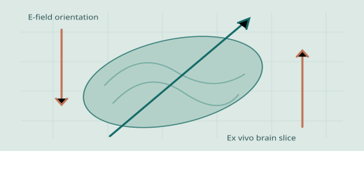

← Back to selected research
PUBLISHED · JNE 2026 · FIRST AUTHOR
Why electric-field orientation matters
Designed orthogonal stimulation configurations for cortical brain slices and paired neural recordings with FEM modeling. Observed activation thresholds more than fivefold lower for out-of-plane fields than for fields aligned with cortical columns.
Brain slices COMSOL FEM Quantitative analysis

PUBLISHED · JNE 2026Conceptual field-orientation illustration.
PROJECT OVERVIEW
From idea to evidence.
My contribution
Built and validated ex vivo measurement configurations, acquired electrophysiology data, and investigated the relation between field direction and activation threshold.
Findings & significance
Published evidence that field orientation relative to tissue structure can strongly influence neural activation in this ex vivo model.